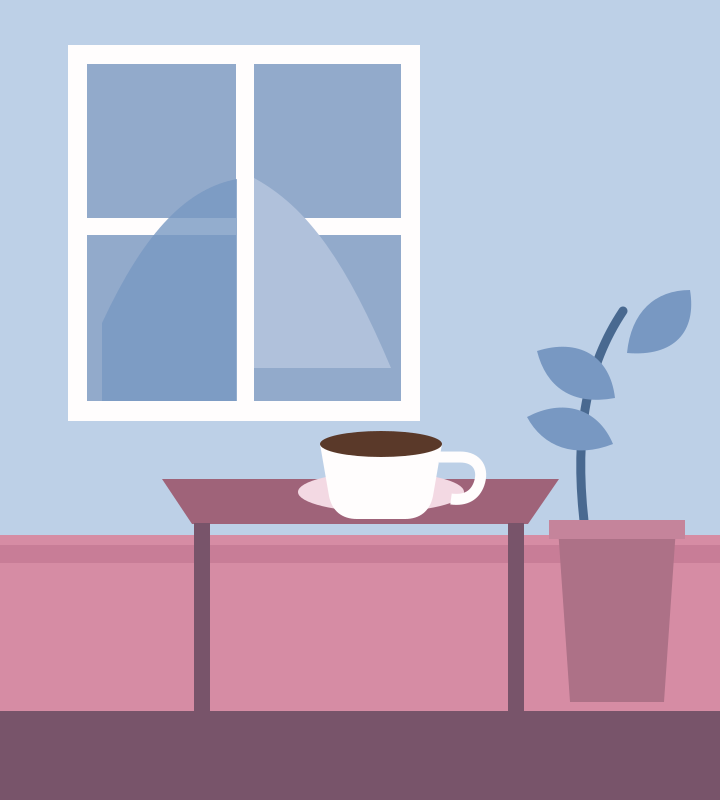

真誠選豆
認真認識每一款咖啡豆，分享它獨有的風味與個性。
OUR STORY
天天咖啡從一個簡單的念頭開始：讓喝咖啡成為日常裡自在的小事。
02 / 03
A PLACE FOR YOURSELFHOW IT BEGAN
天天咖啡的起點，是對咖啡香氣與休憩時光的喜愛。我們想像一個不必匆忙的角落：一杯好喝的咖啡、一張舒服的椅子，還有可以照自己步調度過的片刻。
於是，天天咖啡誕生了。這裡的每個細節，都希望讓你放鬆下來，重新找回生活裡簡單而踏實的愉快。
讓咖啡，陪你慢下來。WHAT WE BELIEVE
用真誠的心意，照顧咖啡，也照顧每一段相聚時光。
認真認識每一款咖啡豆，分享它獨有的風味與個性。
從烘焙到沖煮都不急著求快，讓每一杯都值得期待。
讓每位來訪的人，都能依自己的步調享受這段時間。
一杯咖啡的時間，
也可以只屬於自己。